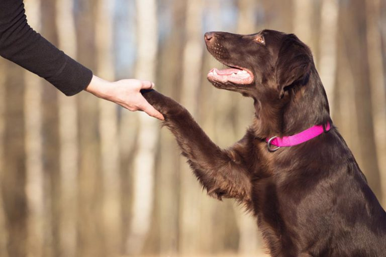
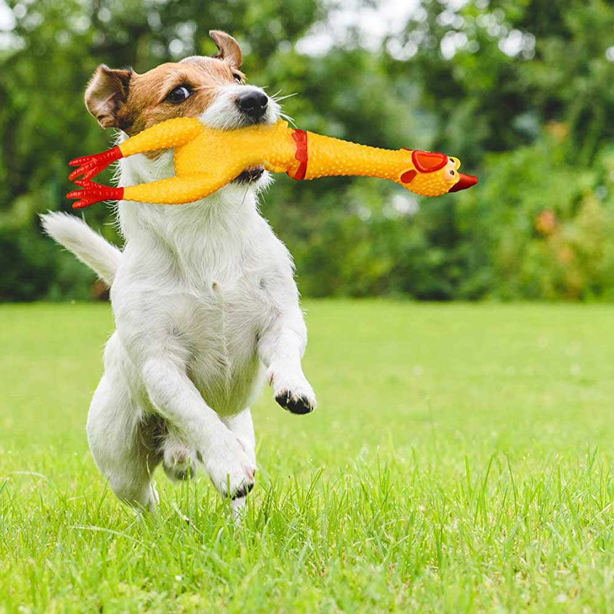

Первоначальный источник статьи
Собака - друг человека
Многие из нас так или иначе общались с собакой, у некоторых был или, даже сейчас, есть собственный питомец. И каждый может с добротой вспомнить о нем. Собаки любят проводить время с хозяином. Но, к сожалению, не каждый хозяин знает, что любая собака нуждается в дрессировке.
Занятия важны и для психики: собаки любят ощущать себя нужными и занятыми серьезным делом. От полного безделья и отсутствия умственных и физических задач животное деградирует: становится расторможенным, ленивым, обзаводится дурными привычками и даже может начать проявлять агрессию по отношению к членам хозяйской семьи.

Какие на самом деле цели обучения?
- позволяют управлять собакой в любых условиях и устанавливают правильную иерархию во взаимоотношениях «питомец-владелец»;
- развивают собачий интеллект и помогают направлять энергию в правильное русло;
- готовят к прохождению более серьезных дрессировочных комплексов — если вы хотите вырастить охранника или защитника-телохранителя.
Итак, стоит дрессировать своего питомца или нет, - понятно. Но вот как это лучше сделать?
Это может быть профессиональный тренер или самостоятельное обучение.
У обоих методов есть свои преимущества. Обратитесь к инструктору, если вы неопытный владелец или отличаетесь неорганизованностью либо слишком мягким характером.
Рассмотри эти методы.
Инструктор:
- сэкономит ваше время, нервы и силы;
- будет заниматься регулярно;
- в любом случае добьется результата;
- выдаст сертификат о сдаче норматива ОКД.
Если бумажка не нужна, времени много, организованность на высоте и характер позволяет добиваться от мохнатого «ученика» нужных действий — работайте самостоятельно. Плюсы:
- экономия времени и финансов;
- занятия проходят в привычной для животного обстановке;
- у него возникает и укрепляется контакт исключительно с вами, а не с чужим человеком.
Не слушайте тех, кто утверждает, что «дрессировать декоративные породы не нужно». Это требуется особям любых пород. Также заблуждением является мнение, что взрослые псы не поддаются дрессировке — просто процесс пойдет тяжелее, ведь характер уже сформирован, вместе с плохими привычками — например, не слушаться хозяина. Понадобятся: регулярность, строгость, терпение. И успеха вы добьетесь.
Итак, теперь вы поняли, в чем нуждается ваш питомец и знаете что делать. А чтобы сделать правильный выбор, - ознакомьтесь с более подробной информацией.
